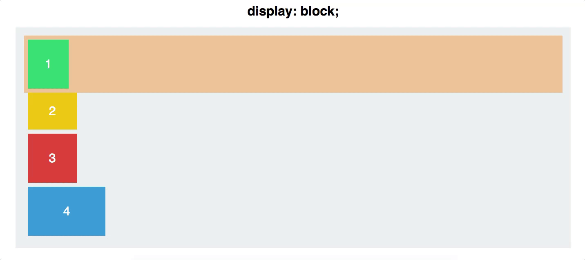
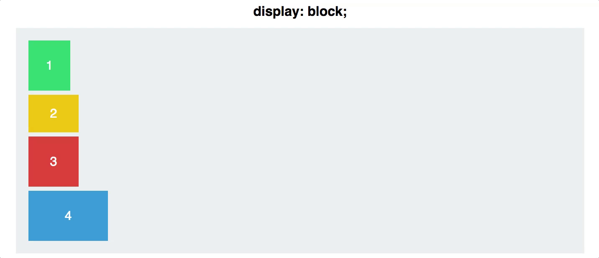

Flexible Box Layout, ou FlexBox é um modelo de layout, que permite criar um contexto para que elementos se ajustem responsivamente seguindo propriedades e o tamanho disponível da tela ou container.
Quando falamos em contexto na estilização, nos referimos a como elementos filhos irão se organizar em relação a seus pais, ao passarmos a propriedade de display para o pai, tambem definimos que tipo de propriedades seus filhos podem tomar.
Um container flex estabelece um novo contexto de formatação flex para seus filhos. A ideia é a mesma de um contexto de block. Por exemplo, a propriedade float não tem efeito dentro do flex, e as margins do parent nao colapsam com as margins dos filhos.
Containers Flex possuem propriedades especiais, diferentes de um container block, porém, ambos assumem a mesma caracteristica de gerar um "bloco" que ocupa uma linha inteira de seu pai.
Isso muda com o inline-flex, que gera um elemento parent que se comporta inline com outros elementos, na mesma linha, quando voce nao quer que seu container ocupe o espaço que outros elementos poderiam dividir.